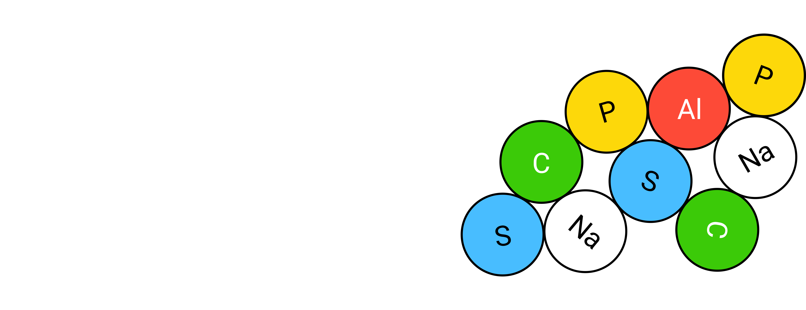
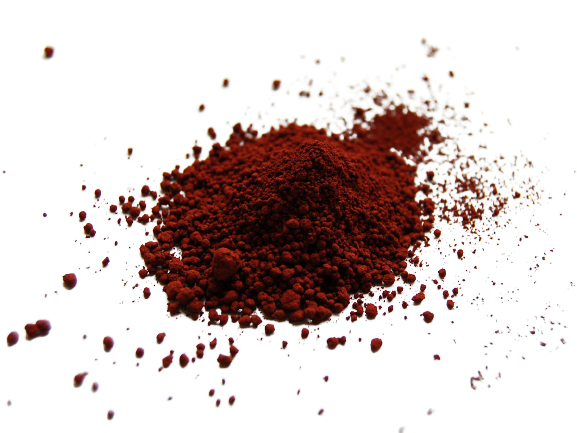

Неорганічна речовина — сукупне поняттям для хімічних
термінів «неорганічна сполука» та проста речовина. В межах ряду інших дисциплін (геології, екології
(environmental science)) має інше значення — хімічна речовина не рослинного і не тваринного походження,
а також речовини до
складу яких входить одна, або декілька неорганічних сполук. З точки зору хімії, останнє значення
рівноцінне суміші неорганічних речовин.
НЕОРГАНІЧНІ РЕЧОВИНИ
Ознайомтесь з неорганічними речовинами, дізнайтеся щось нове та цікаве
Вам потрібно знати:
Неорганічні сполуки — хімічні сполуки, які не
містять
атомів карбону, ковалентно пов'язані із атомами гідрогену. Прості карбоновмісні сполуки типу
CO,
HCN та цианіди, карбіди розглядаються саме неорганічною хімією;
Проста речовина — хімічна речовина, структурні
одиниці
якої: або є представниками, або складаються з атомів, тільки одного хімічного елементу;
Хімічна речовина — вид матерії, яка
характеризується
масою та складається з елементарних частинок (електронів, протоноів, нейтронів, мезонів і
т.д.);
Суміш — фізико-хімічна система, до складу якої
входять дві, або кілька хімічних сполук (компонентів).
Приклади неорганічних речовин:
Вода, кислоти(соляна, азотна, сірчана), сіль, аміак, вуглекислий газ,
метали,
неметали.
 Неорганічна група відрізняється відсутністю вуглецевого скелета, який
характерний для органічних речовин. Неорганічні речовини за складом прийнято ділити на прості та
складні. Просто речовини складають нечисленну групу. Всього їх начислюється приблизно 400.
Неорганічна група відрізняється відсутністю вуглецевого скелета, який
характерний для органічних речовин. Неорганічні речовини за складом прийнято ділити на прості та
складні. Просто речовини складають нечисленну групу. Всього їх начислюється приблизно 400.
Метали
Метали — прості речовини, з'єднання атомів яких
грунтується на металевому зв'язку. Ці елементи мають характерні металічні властивості:
теплопровідність, електропровідність, пластичність, блиск і т.д. Всього у цій групі виділяють 96
елементів. До них відносяться: лужні метали(літій, натрій, калій);
лужноземельні метали(магній,
стронцій);
перехідні метали(мідь, срібло,золото); легкі
метали(алюміній, олово, свинець);
полуметали(полоній, московій, нихоній); лантаноіди та лантан(скандій, ітрій); актиноіди та
актиній (уран, нептуній, плутоній).

В основному у природі метали зустрічаються у вигляді руди і з'єднань. Щоб отримати чистий метал без
домішок, проводиться його очищення. При необхідності можливе проведення легування, або інші обробки.
Цим займається спеціальна на ука - металургія. Вона підзрозділяється на чорну
та кольорову.
Неметали
Неметали — хімічні елементи, які не володіють
металевими властивостями. Наприклад: Вода, акисеньзот, сірка, азот і т.д.
Неметали відрізняються великим числом електронів на зовнішньому енергетичному рівні атома. Це
обумовлює деякі властивості: підвищується здатність приєднувати додаткові електрони,
проявляється
більш висока окислювальна активність. У природі можна зустріти неметали у вільному стані:
кисень,
хлор, фтор, водень. А також тверді форми: йод, фосфор, кремній, селен.
 Деякі неметали мають властивість алотропію. Вони можуть існувати у різних
модифікаціях і формах. Наприклад: газоподібний кисень має модифікації: кисень і озон, твердий
вуглець може існувати в таких формах: алмаз, графіт, скловуглець і т.п.
Деякі неметали мають властивість алотропію. Вони можуть існувати у різних
модифікаціях і формах. Наприклад: газоподібний кисень має модифікації: кисень і озон, твердий
вуглець може існувати в таких формах: алмаз, графіт, скловуглець і т.п.
Складні неорганічні сполуки
Ця група речовин більш численна. Складні сполуки - відрізняються наявністю в складі речовини
декількох хімічних елементів.

Приклади та класифікація:
Оксиди – сполуки, одним з елементів яких є кисень. В групу входять: несолетворні (наприклад, монооксид вуглецю, оксид азоту) солетворн оксиди (наприклад, оксид натрію, оксид цинку). Кислоти – речовини, до складу яких входять іони водню і кислотні залишки. Наприклад, азотна кислота, сірчана кислота, сірководень. Гідроксиди – сполуки, у складі яких присутня група –ВІН. Класифікація: підстави – розчинні і нерозчинні лугу – гідроксид міді, гідроксид натрію; кисневмісні кислоти – диводород триоксокарбонат, водень триоксонітрат; амфотерні – гідроксид хрому, гідроксид міді. Солі – речовини, у складі яких є іони металу і кислотні залишки. Класифікація - середні: хлорид натрію, сульфат заліза; кислі: гідрокарбонат натрію, гідросульфати; основні: нітрат дигідроксохрома, нітрат гідроксохрома; комплексні: тетрагідроксоцинкат натрію, тетрахлороплатинат калію; подвійні: алюмокалієві галуни; змішані: сульфат алюмінію калію, хлорид міді калію.
Оксиди – сполуки, одним з елементів яких є кисень. В групу входять: несолетворні (наприклад, монооксид вуглецю, оксид азоту) солетворн оксиди (наприклад, оксид натрію, оксид цинку). Кислоти – речовини, до складу яких входять іони водню і кислотні залишки. Наприклад, азотна кислота, сірчана кислота, сірководень. Гідроксиди – сполуки, у складі яких присутня група –ВІН. Класифікація: підстави – розчинні і нерозчинні лугу – гідроксид міді, гідроксид натрію; кисневмісні кислоти – диводород триоксокарбонат, водень триоксонітрат; амфотерні – гідроксид хрому, гідроксид міді. Солі – речовини, у складі яких є іони металу і кислотні залишки. Класифікація - середні: хлорид натрію, сульфат заліза; кислі: гідрокарбонат натрію, гідросульфати; основні: нітрат дигідроксохрома, нітрат гідроксохрома; комплексні: тетрагідроксоцинкат натрію, тетрахлороплатинат калію; подвійні: алюмокалієві галуни; змішані: сульфат алюмінію калію, хлорид міді калію.
Неорганічні сполуки з вуглецем
Такі речовини традиційно відносяться до групи
неорганічних. Ось декілька прикладів таких речовин:
Карбонати - ефіри і солі вугільної кислоти – кальцит, доломіт. Карбіди –
сполуки
неметалів і металів з вуглецем – карбід берилію, карбід кальцію. Ціаніди – солі
цианистоводородной
кислоти – ціанід натрію. Оксиди вуглецю – бінарне з'єднання вуглецю і кисню – чадний і
вуглекислий
гази. Цианати – є похідними від цианової кислоти – фульмінова кислота, ізоціанова кислота.
Карбонільні метали – комплекс металу і монооксиду вуглецю – карбоніл нікелю.
Властивості неорганічних речовин
Всі розглянуті речовини відрізняються індивідуальними хімічними і фізичними
властивостями. У загальному вигляді можна виділити відмітні риси кожного класу неорганічних
речовин:
Прості метали: високий рівень тепла, електропровідність; металевий блиск;
відсутність прозорості; міцність і пластичність; при кімнатній температурі зберігають твердість
і форму (крім ртуті).
Складні речовини: оксиди: вступають у реакцію з водою, кислотами і
кислотними оксидами; кислоти вступають у реакцію з водою, основними оксидами і лугами; амфотерні
оксиди: можуть вступати в реакції з кислотними оксидами та основами; гідроксиди: розчиняються у
воді, мають широкий діапазон температур плавлення, можуть змінювати колір при взаємодії з
лугами.
Клітини
Клітка будь-якого живого організму складається з безлічі компонентів. Деякими з них є
неорганічні сполуки: Вода. Наприклад, кількість води в клітині становить від 65 до 95%. Вона
необхідна для здійснення хімічних реакцій, переміщення компонентів, процесу терморегуляції.
Також, саме вода визначає обсяг клітини і ступінь її пружності. Мінеральні солі. Можуть бути
присутні в організмі - як в розчиненому вигляді, так і в рідкому. Важливу роль у процесах
клітини
грають катіони: калій, натрій, кальцій, магній - і аніони: хлор, гідрокарбонати, суперфосфат.
Мінерали необхідні для підтримання осмотичної рівноваги, регуляції біохімічних і фізичних
процесів, утворення нервових імпульсів, підтримання рівня згортання крові і багатьох інших
реакцій. Для підтримання життєдіяльності важливі не тільки неорганічні речовини клітини.
Органічні компоненти займають 20-30% її обсягу. Класифікація: прості органічні речовини:
глюкоза, амінокислоти, жирні кислоти; складні органічні речовини: білки, нуклеїнові кислоти,
ліпіди, полісахариди.
Органічні компоненти необхідні для виконання захисної, енергетичної функції
клітини, вони є джерелом енергії для клітинної активності і запасають поживні речовини,
проводять синтез білків, передають спадкову інформацію. Можна сказати, що існування живих
організмів
було б неможливим без груп органічних і неорганічних сполук. Вони важливі у кожній сфері
людського життя, а також в існування кожного організму.